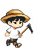

욱감자 수확 대작전
독감자는 피하고, 욱감자 6개를 캐서 밭 끝까지 이동하세요!
모바일 조이스틱 · PC 방향키 / Space / Ctrl
게임 설명
← → 이동
Space · 뛰기
Ctrl · 캐기
승리 욱감자 6개를 캐고 오른쪽 끝에 도착!
주의 욱감자와 독감자에 몸이 닿으면 목숨이 줄어요.
모바일 조이스틱 · 뛰기 · 캐기
PC ← → · Space · Ctrl
도착 성공!
욱감자를 충분히 모아 선입금폼에 도착했어요.
조금만 더!
제한 시간 안에 도착하지 못했어요.